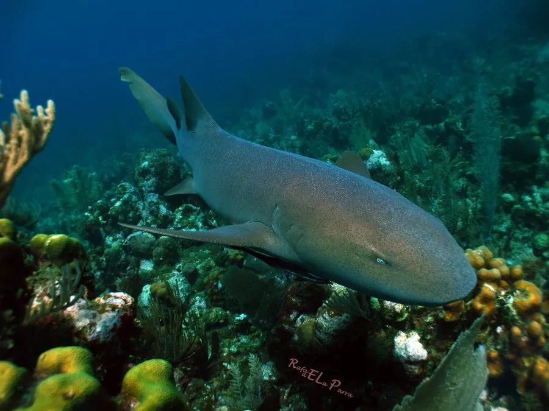

鱼类 · 动物界
护士鲨 Ginglymostoma cirratum

行动缓慢的底栖鲨鱼，白天成群伏在礁石下休息，夜间捕食，是西大西洋珊瑚礁常见的潜水观赏对象。
- 分类
- 门脊索动物门纲软骨鱼纲目须鲨目科护士鲨科属护士鲨属
- 栖息环境
- 热带和亚热带浅海的珊瑚礁、红树林和海草床
- 地理分布
- 西大西洋从美国东南部到巴西沿海，以及东太平洋部分海域
- 保护级别
- IUCN 易危（VU）；中国未列入国家重点保护野生动物名录
物种志
护士鲨体呈圆柱形，头部宽扁，口位于头的前下方，口前有一对短触须。背鳍呈圆形，位置靠后，尾鳍长。体色黄褐、灰褐或锈褐色，幼鱼身上常有暗色斑点。成鱼体长一般 2–3 m，最大可达 4 m，体重 100–200 kg。
护士鲨分布于西大西洋热带和亚热带浅海，从美国东南部、加勒比海到巴西沿海，也见于东太平洋部分海域。它是底栖鲨鱼，白天常成群伏在礁石缝和岩洞中休息，夜间出来捕食，用吸食的方式吞下鱼类、甲壳类、软体动物和海胆。护士鲨为卵胎生，每胎可产 20 余尾幼鲨，母鲨有护卵行为。由于栖息地破坏和渔业捕捞，其种群下降，IUCN 将其列为易危。
形态与习性
- 食性鱼类、甲壳类、软体动物和海胆
- 体长一般 2–3 m，最大可达 4 m
- 体重一般 100–200 kg
- 活动节律白天伏在礁石下休息，夜间捕食
- 繁殖卵胎生，每胎可产 20 余尾幼鲨
- 习性行动缓慢，常用吸食方式吞下猎物
趣味知识
- 护士鲨白天常成群挤在礁石缝里休息，有时会叠在一起。
- 它捕食时像吸尘器一样把猎物连同海水一起吸入口中。
- 护士鲨的幼鲨在母体内孵化，每胎可产 20 余尾。